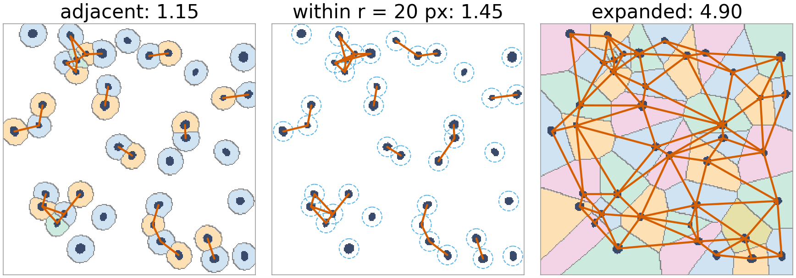
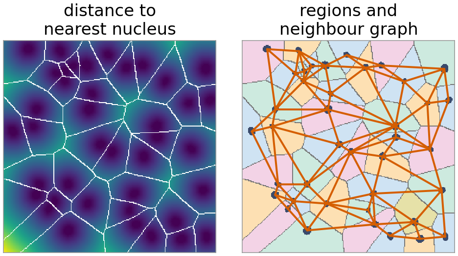
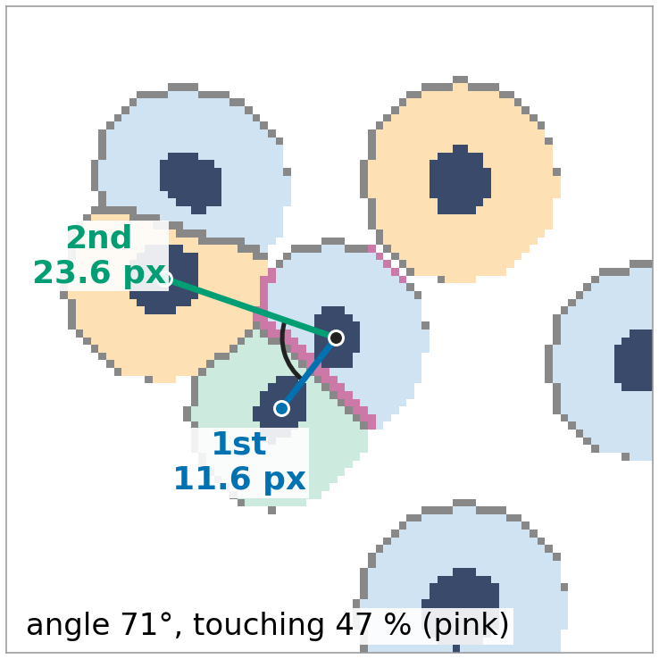
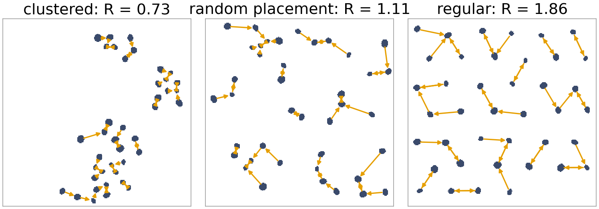
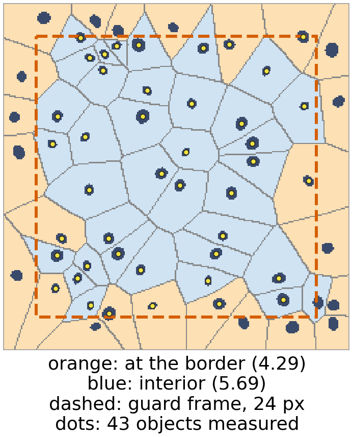
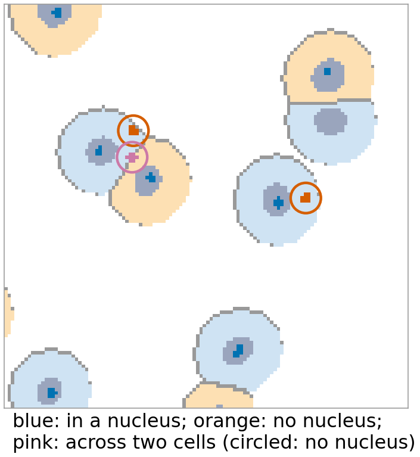
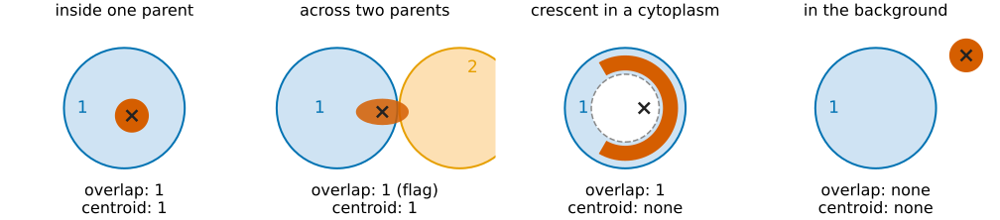

Neighbours, parents and children
About this lecture
So far every column described one object on its own. Many questions are about relations: how crowded is a cell, which nucleus does a spot belong to, are the cells clustered?
- Three definitions of neighbour, three different answers.
- Per object: number of neighbours, percent touching, first and second closest, the angle between them.
- Population: the nearest-neighbour distance against a random pattern (Clark–Evans), and the border problem.
- Parents and children: spots in nuclei, nuclei in cells; assignment by overlap or by centroid, and the cases in between.
Slides titled The math give the formulas and proofs; the ideas are complete without them.
Who is my neighbour?
Three common definitions, applied to the same 40 nuclei (demo, random placement):
- Adjacent: the segmented objects share a boundary (4- or 8-neighbouring pixels). Here the cell bodies, grown 9 px from the nuclei: 1.15 neighbours on average.
- Within distance r: the closest pixels of the two objects are at most r apart. Nuclei, r = 10 px: 0.45; r = 20: 1.45; r = 30: 2.45.
- Expand until adjacent: grow every object into the background until it meets another, so the whole image is divided among them. 4.90.

The answer is a property of the definition as much as of the cells. Report it with the number.
Expand until adjacent
Give every background pixel to the nearest object (the distance transform of the morphology day, keeping which object was nearest):
- The result tiles the image: a Voronoi tessellation of the objects. The boundaries are the midlines between objects, the same picture as the watershed of the distance transform (watershed day).
- Neighbours = objects whose regions touch. Every object gets some, however far apart the objects are.
- In the interior of a large random pattern the average is close to 6 (demo: 5.62 for interior objects).
- Cheap to compute: one exact distance transform with nearest-object labels.

The math: Voronoi neighbours
The region of object k: V_k = \{\mathbf x : d(\mathbf x, O_k) \le d(\mathbf x, O_j)\ \forall j\}, with d(\mathbf x, O) = \min_{\mathbf y \in O} \lVert \mathbf x - \mathbf y \rVert.
- The feature transform gives, for every pixel, its nearest object pixel \mathbf y^*(\mathbf x), and the label at \mathbf y^* is the region. Same cost as the distance transform.
- For points as objects, the regions are convex polygons and the neighbour graph is the Delaunay triangulation, a planar graph. Euler’s formula V - E + F = 2 with every face a triangle gives E \le 3V - 6, so the mean degree 2E/V < 6.
- Regions at the image border are cut off, so border objects have fewer neighbours: a bias towards lower counts.
Per-object relation columns
| column | meaning |
|---|---|
| number of neighbours | for the chosen definition |
| percent touching | share of the object’s boundary pixels that touch another object |
| first, second closest | label and centroid distance of the two nearest objects |
| angle between neighbours | angle at the object between the directions to those two |
Percent touching tells a cell in a dense sheet (close to 100 %) from one with a free edge. Distances are between centroids here; boundary-to-boundary distances are another choice.
The neighbour graph: objects as nodes, neighbours as edges. It was the region adjacency graph on the labelling day; the graph cuts day uses graphs of pixels the same way.

Clustered, random or regular?
Compare the mean nearest-neighbour distance \bar d with what a random (Poisson) pattern of the same density would give: the Clark–Evans ratio
R = \frac{\bar d_{\text{observed}}}{\bar d_{\text{random}}}, \qquad \bar d_{\text{random}} = \frac{0.5}{\sqrt{\rho}},\ \rho = \frac{\text{number of objects}}{\text{area}}.
- R < 1: clustered; R \approx 1: random; R > 1: regular (cells avoid each other).
- Demo (40 nuclei in 256 × 256 px, \bar d_{\text{random}} = 20.2 px): clustered 0.73, random placement 1.11, regular 1.86.
- Why 1.11 and not 1: nuclei cannot overlap, so very short distances never occur. Real objects are never exactly Poisson.

The math: the Poisson nearest neighbour
Points scattered independently with density \rho: the number in a disc of radius r is Poisson with mean \rho\pi r^2.
- P(D > r) = P(\text{no other point within } r) = e^{-\rho \pi r^2}, so the density of the nearest-neighbour distance is f(r) = 2\pi\rho r\, e^{-\rho\pi r^2} (the curve in the demo).
- E[D] = \int_0^\infty P(D > r)\,dr = \int_0^\infty e^{-\rho\pi r^2} dr = \dfrac{1}{2\sqrt\rho}.
- For n points the standard error of \bar d is \approx 0.26136/\sqrt{n\rho}, which gives a z-test for R = 1 (Clark & Evans, 1954).
- Edge effect: near the border the true nearest neighbour may be outside the image, so observed distances are too long and R is biased upwards.
Try it: neighbours
Objects at the image border
Objects near the edge have fewer neighbours (part of their surroundings is not in the image), and their nearest neighbour may be outside.
- Demo (60 nuclei, expansion): interior objects 5.69 neighbours, objects whose region touches the border 4.29.
- Remove border objects before measuring: their neighbours lose a neighbour, and the new outer layer is biased instead.
- Guard zone: measure only objects whose centroid is at least g from the border, but let all objects count as neighbours. Unbiased, at the cost of fewer measured objects (43 of 60 here, mean 5.63).
The same idea as the unbiased counting frame of the labelling day: decide which objects are measured separately from which ones exist.

Parents and children
Objects of one kind inside objects of another: spots in nuclei, nuclei in cells, cytoplasm = cell minus nucleus.
- Parent of a child = the parent label with the largest overlap, or the label at the child’s centroid.
- Per parent: child count (“spots per nucleus”), the mean or sum of a child feature, distances of children to the parent’s centre or edge (normalised as in the radial rings of the first unit).
- Explicit cases: children outside any parent (spots in the cytoplasm when the parents are nuclei), children across two parents.
- Overlap of two objects A and B: the share of A inside B, the share of B inside A, and the Jaccard index |A\cap B|/|A \cup B| (the thresholding day). Matching objects of two segmentations by overlap is the evaluation day.

Overlap or centroid?
| child | overlap rule | centroid rule |
|---|---|---|
| entirely inside one parent | that parent | that parent |
| mostly in parent 1, a little in parent 2 | parent 1 (flag: touches 2) | parent 1 if the centroid is in it |
| crescent around the edge of a parent | the parent | none: the centroid falls outside |
| in the background | none | none |

Demo (40 nuclei, 50 spots): with nuclei as parents, 5 spots have no parent (4 in the cytoplasm, 1 between two cells). With cells as parents, every spot has one, and one spot lies across two cells (63 % in one of them).
The math: assignment
Child c with pixels C, parents P_1, \dots, P_m:
\text{overlap rule: } \operatorname{parent}(c) = \arg\max_k |C \cap P_k| \ (\text{none if all are } 0), \qquad \text{centroid rule: } \operatorname{parent}(c) = L_P(\operatorname{round}(\bar{\mathbf x}_C)).
- Overlap fraction |C \cap P_k|/|C|: flag children below, say, 0.5, or with two non-zero overlaps.
- Both rules need one pass over the pixels: accumulate |C \cap P_k| in a sparse table indexed by (child, parent).
- Child count per parent = number of children assigned to it; per-parent aggregates (mean child intensity, total child area) are sums over the same table.
Two channels: colocalisation

Two proteins in two channels: are they in the same place? White in the merge is not evidence: it depends on each channel’s display range, on bleed-through (right panel) and on the resolution.
- The scatter plot of the two channels (one point per pixel) is the picture; Pearson’s r and Manders’ M1/M2 summarise it, and they need a region (inside the cells) and thresholds.
- Object-based colocalisation is the parent–child relation of this unit: the share of spots of A whose centroid lies in an object of B, or within a distance of a B spot.
- Taught in the colocalisation day of the Fluorescence quantification elective: coefficients, chance and tests, objects and distances, confounds.
Catalogue: relation columns
| column | unit | depends on |
|---|---|---|
| number of neighbours | – | definition (adjacent / within r / expanded), connectivity |
| percent touching | % | the segmentation’s boundaries |
| first and second closest distance | px (µm) | centroids or boundaries |
| angle between neighbours | ° | |
| parent label, child count | – | overlap or centroid rule |
| overlap fraction, Jaccard | – | |
| Clark–Evans R (per image) | – | density, border handling |
Object-level colocalisation (the share of spots of one channel whose centroid lies in an object of the other) is the same parent–child relation; the colocalisation elective does colocalisation pixel by pixel.
Summary
- “Number of neighbours” depends on the definition: adjacent boundaries, closest pixels within r, or expansion until adjacent (a Voronoi tessellation, about 6 neighbours inside a random pattern).
- Percent touching, the closest objects and the angle between them are per-object relation columns.
- Clark–Evans R compares the mean nearest-neighbour distance with a random pattern: < 1 clustered, > 1 regular.
- Border objects lose neighbours: use a guard zone, not removal.
- Children get a parent by largest overlap or by centroid; count, aggregate, and flag the children outside or across parents.